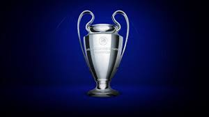

Champions
Champions
La UEFA Champions League es el torneo de clubes de fútbol más prestigioso de Europa. En ella se concentran los mejores equipos en busca de la copa de los campeones, la histórica Copa de Europa.
La UEFA Champions League es el torneo de clubes de fútbol más prestigioso de Europa. En ella se concentran los mejores equipos en busca de la copa de los campeones, la histórica Copa de Europa.

La Copa América de fútbol es el campeonato de selecciones masculinas nacionales de ese deporte más importante del continente americano y uno de los más antiguos. Es organizado por la Confederación Sudamericana de Fútbol.

El mundial de fútbol es un gran evento deportivo en el que compiten las mejores selecciones nacionales del mundo de este deporte. Se celebra cada cuatro años desde 1.930, con la excepción de los años 1.942 y 1.946, en los que se suspendió debido a la Segunda Guerra Mundial.
Se trata de un torneo de carácter bienal en el que participan las 55 selecciones de la federaciones miembro de la UEFA (actualmente participan 54, debido a la suspensión de Rusia).
La Copa Libertadores es el torneo de clubes más prestigioso del continente. Su lema, "La Gloria Eterna", sintetiza la importancia de este certamen continental que reúne a los gigantes de Sudamérica, inmortalizando todos los años a un nuevo campeón.
Considerado uno de los mejores jugadores de todos los tiempos. Ganó 3 Copas del Mundo con Brasil (1958, 1962 y 1970) y es el máximo goleador en la historia del club brasileño Santos con más de 1,280 goles. Su estilo de juego, técnica, visión y capacidad para marcar goles lo han convertido en una leyenda del fútbol mundial.
Diego Armando Maradona nació el 30 de octubre de 1960 en Argentina y es conocido por su extraordinaria habilidad para controlar el balón y su capacidad para marcar goles. Uno de sus momentos más icónicos fue el "Gol del Siglo" en la Copa del Mundo de 1986, donde llevó a Argentina a la victoria sobre Inglaterra con dos de los goles más legendarios de la historia del fútbol. Maradona también ganó la Copa del Mundo en 1986 y dejó una huella imborrable tanto en la selección argentina como en el club Napoli, donde ganó dos títulos de Serie A.
Lionel Messi es considerado uno de los mejores futbolistas de todos los tiempos y nació el 24 de junio de 1987 en Rosario, Argentina. A lo largo de su carrera, ha jugado la mayor parte de su tiempo en el FC Barcelona, donde ganó múltiples títulos de La Liga, la Liga de Campeones de la UEFA y varios Balones de Oro. En 2022, finalmente conquistó la Copa del Mundo con Argentina, cementando su legado como uno de los más grandes. Su capacidad para driblar, su visión y su precisión en los tiros lo han convertido en una verdadera leyenda.
Cristiano Ronaldo nació el 5 de febrero de 1985 en Funchal, Madeira, Portugal. Es conocido por su velocidad, habilidad técnica y capacidad para marcar goles. Ha jugado en algunos de los clubes más grandes del mundo, como Manchester United, Real Madrid y Juventus, y actualmente está en Al-Nassr en Arabia Saudita. Ha ganado cinco Balones de Oro y ha establecido récords goleadores en la Liga de Campeones de la UEFA, convirtiéndose en el máximo goleador de todos los tiempos de la competencia. Su impacto en el fútbol es incuestionable.